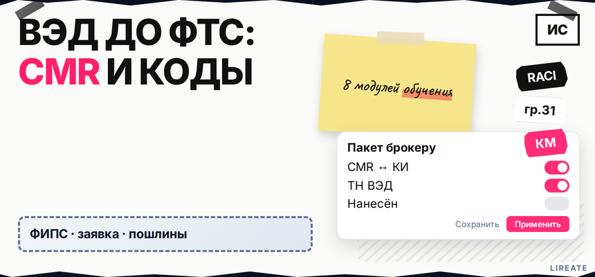

Сотрудник ВЭД впервые ведёт партию с Data Matrix, а брокер уже требует CMR, перечень КИ и графу 31. Обучение менеджера ВЭД по "Честному знаку" при импорте - не курс на 72 часа: это внутренний маршрут, что проверить до передачи пакета на таможню, а что оставить юристу по товарному знаку и сертификации. На 20.11.2026; не заменяет таможенную консультацию. Вы соберёте syllabus на 8 модулей, таблицу ролей и чек-листы сверки транспортных документов с кодами.

TL;DR / Быстрый инсайт: ГИС МТ ведёт цифровую прослеживаемость по КМ (код маркировки, штрих Data Matrix на единицу), а не регистрирует бренд. Менеджер ВЭД (внешнеэкономическая деятельность) сверяет ТН ВЭД, количество в инвойсе и CMR с заказом КМ "Ввезен в РФ", готовит файл КИ для графы 31 ДТ и передаёт пакет декларанту, когда в личном кабинете статус "Нанесён". Юрист закрывает ДС/СС, ТЗ и ТРОИС; ввод "Импорт с ФТС" после выпуска - не solo-зона ВЭД. Базовая цепочка - в гайде markirovka.ru про импорт (см. также L67 в кластере).
По запросу честный знак импорт для менеджера вэд в выдаче доминируют платные ПК и вебинары - редко дают RACI: кто сверяет CMR с КМ, кто ведёт каталог с брендом, кто подписывает ввод после ФТС. КИ - код для гр. 31; КМ - Data Matrix на штуку; тариф генерации - 50 коп. без НДС за единицу.
До первой поставки проведите короткую сессию: не лекцию про всю маркировку, а распределение задач. Иначе менеджер ВЭД тянет регистрацию товарного знака, а юрист заказывает КМ без сверки packing list. Модуль 0 - это 45-60 минут с блокнотом: кто вносит данные в документ импорта с ФТС, кто пишет поставщику про нанесение, кто звонит брокеру в день подачи ДТ.
| Роль | До подачи ДТ | Не брать на себя |
|---|---|---|
| Менеджер ВЭД | ТН ВЭД в спецификации; заказ КМ; сверка инвойса и CMR с числом кодов; файл КИ для гр. 31; контроль статуса "Нанесён" | Регистрация ТЗ, споры по п. 1483 ГК РФ |
| Юрист / комплаенс | Контракт, ДС/СС для гр. 44, ЕРВК при необходимости | Ежедневная сверка CMR с Excel КМ |
| Бренд | Поле "товарный знак" и GTIN в Национальном каталоге; макет этикетки | Выбор площадки нанесения за рубежом |
| Оператор ГИС МТ | После ФТС: документ "Ввод в оборот. Импорт с ФТС" (LP_FTS_INTRODUCE) | Подача черновика ДТ без файла КИ |
Делайте: назначить ответственного за личный кабинет на честныйзнак.рф и за ЭДО с таможенным представителем. Не делайте: смешивать этот внутренний маршрут с обязательным курсом ПК - внешнее обучение на 72 академических часа даёт удостоверение, но не заменяет ваш регламент.
Модуль 1 для новичка ВЭД начинается с десятизначного ТН ВЭД из контракта и ОКПД2 из карточки товара. Сервис checking_codes даёт рекомендацию по товарной группе; финальное правило - в актуальной инструкции на markirovka.ru.
Штраф за оборот без маркировки для ЮЛ - 50 000-100 000 руб. по ч. 1 ст. 15.12 КоАП. Делайте: лист "коды партии" с подписями. Не делайте: копировать чужой ТН ВЭД.
ВЭД передаёт GTIN и артикулы, бренд - текст этикетки. Чек-лист ЧЗ / ТЗ / ТРОИС - в чек-листе маркировки и бренда. Своё имя без свидетельства - юрист до тиража, при необходимости регистрация ТЗ на Лирейт.
Делайте: сверить PDF макета этикетки с карточкой НК. Не делайте: писать чужой известный бренд "для узнаваемости" или оставлять поле ТЗ пустым.
В модуле 3 заказывают КМ со способом выпуска "Ввезен в РФ". Для импорта не из ЕАЭС нанесение Data Matrix - до помещения под процедуру выпуска для внутреннего потребления; из ЕАЭС - до пересечения границы РФ по правилам на markirovka.ru.
| Площадка | Когда уместна | Ограничение |
|---|---|---|
| Завод за рубежом | Стабильный контракт, фабрика обучена | Нужна чёткая инструкция по Data Matrix и отчёт о нанесении |
| Склад вне РФ | Консолидация перед отправкой | Сверка количества до отгрузки |
| Таможенный склад в РФ | Маркировка уже на территории | Не путать с СВХ |
| СВХ | Только при работе с УЭО 2/3 типа | Иначе маркировка на СВХ запрещена |
Делайте: отдать фабрике файлы КМ и норму считывания. Не делайте: откладывать нанесение до склада РФ, если группа требует коды до ФТС.
CMR, коносамент, авианакладная и ТТН сходятся с инвойсом, packing list и числом КМ со статусом "Нанесён". Расхождения правьте до границы, не у декларанта.
Workflow до границы:
Спецификация (ТН ВЭД) → заказ КМ "Ввезен в РФ" → нанесение → отчёт → инвойс ↔ packing list ↔ CMR ↔ перечень КИ → пакет брокеру → гр. 31 → ФТС → [оператор: ввод с ФТС]
Делайте: одна папка: CMR + CSV КИ. Не делайте: смешивать два заказа КМ в одной партии.
Брокеру: контракт, инвойс, packing list, транспорт, ДС/СС (юрист), файл КИ для гр. 31. В строке ДТ - один ТН ВЭД; форматы КИ / КИН / КИГУ / КИТУ / АТК - по инструкции ФТС. В ЛК - статус "Нанесён" (на ТУ - "Сформирован").
| Формат обучения | Срок | Что даёт компании |
|---|---|---|
| Платное ПК (типично ~72 ч.) | Недели | Удостоверение ФИС ФРДО, общая теория ГИС МТ |
| Внутренний маршрут L73 | 1-2 рабочих дня + первая партия | RACI, чек-листы CMR↔КМ, пакет до ДТ |
| Онлайн-мастер-класс импортёра | Разовое мероприятие | Схемы СВХ и склада, без вашего регламента |
Делайте: чек-лист пакета с датой. Не делайте: ввод через "Производство вне ЕАЭС" (LP_GOODS_IMPORT) вместо импорта с ФТС.
После выпуска ФТС оператор ГИС МТ подаёт "Импорт с ФТС"; номер ДТ - 23 цифры через слэш. ВЭД сверяет количество, подпись - у уполномоченного профиля. Сбои ФТС и ЕРВК - в документе импорта с ФТС на docs.crpt.ru и в материале L36 (сниппеты). Не делайте: продажу до ввода.
Закрепите одностраничный регламент: RACI, модули, ссылки на маршрут импорта на markirovka.ru и чек-лист бренда. Шаблон Excel CMR↔КМ и пробный разбор поставки без ДТ - в онбординг. Внешнее ПК - опционально после первой успешной партии.
Своё обозначение на этикетке без реестра - сначала чек-лист маркировки и ТЗ, затем при необходимости подача ТЗ на Лирейт.
Материал проверен: эксперт Елена Ковалева (Главный эксперт по SEO/GEO).
Достоверность данных: ключевые нормы и термины маркировки сверены с открытыми материалами markirovka.ru и docs.crpt.ru на дату подготовки; штрафы - по редакции КоАП на 20.11.2026.
Нет, для первой поставки достаточно внутреннего маршрута из восьми модулей и чек-листа CMR↔КМ. Внешнее ПК на ~72 академических часа имеет смысл, если нужен документ ФИС ФРДО для HR или тендера: отправляйте сотрудника после того, как он уже провёл живую партию по вашему регламенту, иначе теория не привяжется к вашим контрактам.
Уполномоченный оператор ГИС МТ с правом ввода в оборот, чаще юрист или выделенный администратор кабинета. ВЭД сверяет количество и передаёт номер ДТ, но не подменяет комплаенс при подписании ЭП.
Количество мест, вес, описание груза и соответствие артикулов packing list и перечню КИ со статусом "Нанесён". Любое расхождение фиксируйте до пересечения границы, иначе декларант получит не сходящийся пакет.
Как правило, нет: маркировка на СВХ запрещена, кроме сценариев с участником внешней торговли 2/3 типа. В учебном плане заранее выберите завод, склад вне РФ или таможенный склад, а не "донанесём на СВХ".
Сначала сверьте статусы КМ, формат номера ДТ и тип документа ввода. Пошаговый troubleshooting - в документе импорта с ФТС на docs.crpt.ru и в материале L36 про сниппеты, не в этом syllabus для новичка ВЭД.
Базовый маршрут импорта на markirovka.ru ведёт с нуля по всей цепочке (материал L67). Здесь - роли, обучение сотрудника ВЭД и сверка транспортных документов с кодами до передачи пакета брокеру.